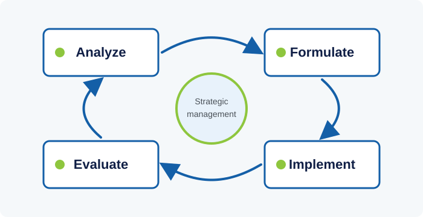

Tier 1
Strategic management is the ongoing process of setting an organization's long-term direction, deciding where to compete or focus effort, and aligning people and resources behind that choice. For a public institution managing long-term member savings, getting this right matters as much as it does for any commercial enterprise - arguably more, given the multi-decade horizon involved.
1. What Strategic Management Actually Involves
Strategic management is often confused with strategic planning, but the two are not the same thing. Planning produces a document - a set of goals, priorities, and targets for a coming period. Management is the continuous discipline of analysis, decision-making, resource allocation, and course-correction that keeps an organization moving toward its long-term purpose, long after the planning document has been signed off. A plan that sits in a drawer while daily operations run on autopilot is not strategic management; it is a missed opportunity.
Most treatments of the field describe a repeating cycle with four broad phases: analyzing the internal and external environment, formulating a strategy in response to that analysis, implementing the strategy through structures, systems, and people, and evaluating results so the next cycle can be adjusted. None of these phases is a one-time event - environments change, competitors and comparable institutions adapt, and internal capabilities evolve, so the cycle repeats on a rolling basis rather than running once every five years and stopping.

A useful distinction sits underneath all of this: strategy is fundamentally about choice. An organization cannot pursue every worthwhile goal with equal intensity at the same time, so strategic management is as much about deciding what not to prioritize as it is about deciding what to pursue. Institutions that struggle strategically often do not lack good ideas - they lack the discipline to say no to good ideas that pull focus and resources away from the chosen path.
2. Common Frameworks for Analysis and Formulation
Several widely taught frameworks help structure the analysis phase. A SWOT analysis (Strengths, Weaknesses, Opportunities, Threats) separates internal factors an organization can control from external factors it must respond to. A PESTEL scan (Political, Economic, Social, Technological, Environmental, Legal) broadens that external view systematically, which is particularly relevant for an institution whose performance is affected by interest rates, regulation, demographic shifts, and government policy all at once.
Michael Porter's Five Forces framework examines the competitive or comparative pressures an organization faces - the bargaining power of the parties it depends on, the threat of new entrants or substitutes, and the intensity of existing rivalry - helping to explain why some institutions in a sector sustain strong performance while others do not. For mission-driven and public-sector bodies, the framework is usually adapted rather than applied literally, since 'competition' can mean competing for public trust, for talent, or for policy influence rather than market share.
On the formulation side, the Balanced Scorecard, developed by Robert Kaplan and David Norton, pushes organizations to define objectives across four linked perspectives - financial, customer or member, internal process, and learning and growth - rather than fixating on financial targets alone. This matters for institutions where the ultimate purpose (member welfare, long-term fund sustainability) cannot be captured by a single financial number in any given year.
3. From Strategy to Execution
Research on strategy execution consistently finds that the gap between having a good strategy and achieving results usually lies in implementation, not formulation. A strategy only becomes real when high-level objectives are cascaded into specific, owned, and measurable goals at the department and individual level - a process sometimes called goal alignment or strategy cascading. Without this step, staff may be working hard on tasks that feel productive locally but do not add up to the organization's stated priorities.
Clear ownership and resourcing are equally important. Every strategic priority needs a named owner accountable for progress, a realistic budget and staffing allocation, and a review rhythm - typically quarterly - where progress against milestones is checked and obstacles are surfaced early rather than discovered at year-end. Institutions that review strategy only once a year often find that by the time a problem is visible in the annual report, it has been compounding unaddressed for months.
Communication is the third execution lever that is easy to underrate. Staff who do not understand how their daily work connects to the institution's strategic priorities tend to default to familiar routines rather than adapting behavior to new priorities, even when they support the strategy in principle. Repeated, plain-language communication of the 'why' behind strategic choices - not just the 'what' - is one of the most consistently cited success factors in execution research.
4. Strategic Risk, Review, and Adaptation
No strategy survives contact with reality unchanged. Economic shocks, regulatory changes, technological disruption, or shifts in member expectations can all invalidate assumptions a strategy was built on. Strategic management therefore includes a deliberate mechanism for environmental scanning - regularly checking whether the assumptions behind the current strategy still hold - and a governance process for revising direction when they do not, without treating every revision as a sign of failure.
A common failure mode is 'strategic drift': gradual, unnoticed misalignment between an organization's strategy and its changing environment, where each individual adjustment seems small and reasonable but the cumulative effect leaves the organization pursuing a strategy that no longer fits its context. Regular, structured strategy reviews - rather than purely informal, ad hoc conversations - are the main defense against drift going unnoticed until it becomes a crisis.
Finally, strategic management works best when it is treated as a capability the whole organization builds, not an activity performed by a small planning unit in isolation. Middle managers and frontline staff typically have the clearest, most current view of where strategic assumptions are starting to break down in practice - building channels for that information to reach decision-makers is as much a part of strategic management as the formal planning cycle itself.
Knowledge Check: Strategic Management
10 questions. Finish the reading above, then take the test to check your understanding.
Question 1 of